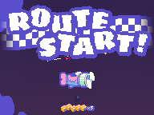
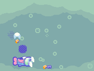
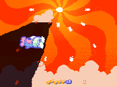
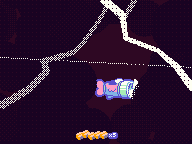
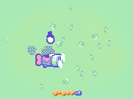
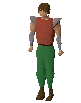

a side-scrolling bullet-hell mail delivery game + a first foray into making something set in aerie
it's got a few phases to run through. probably a few minutes to see everything. i started near the end of june 2025 but near the end of july i drifted toward other projects... so it's unfinished. i may return to it i may not





i'm really happy with the music i wrote for this project. here's a selection; more are listed on the tunes page (tagged #bjaygame). mart also kindly wrote some music, check out her guest track!

here are some builds of the game. keep in mind none of them have been tested... there's also a link to the source code, if you'd like to look through it for personal edification. built with the godot engine.